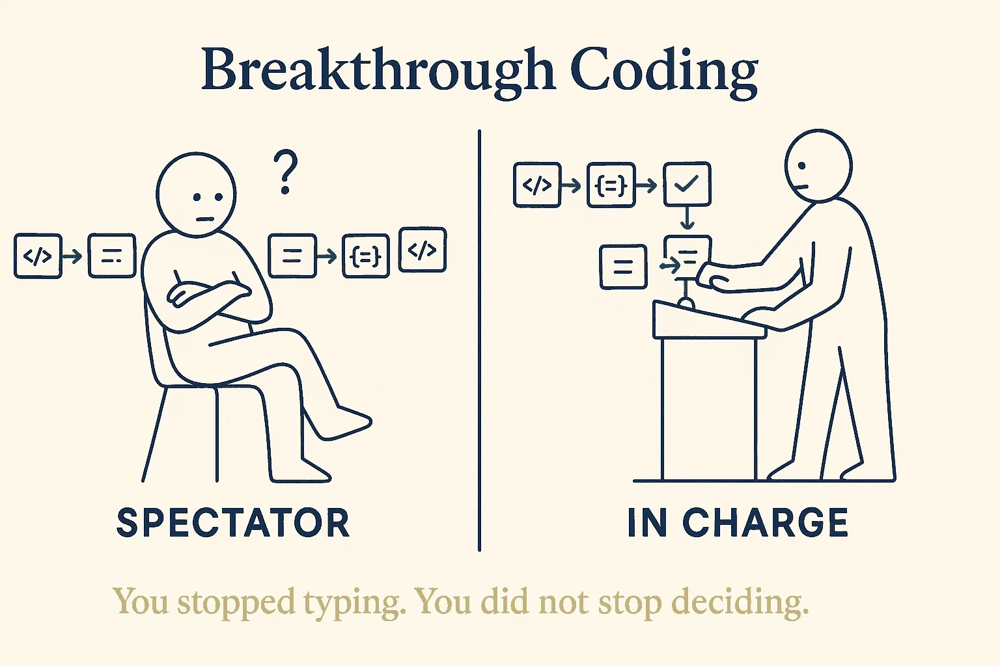
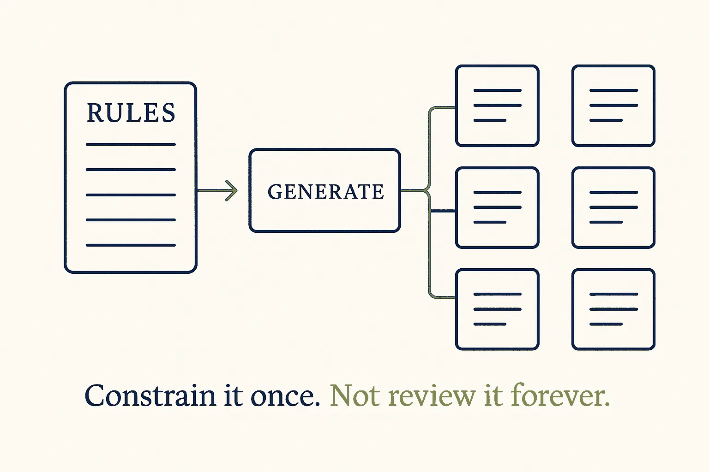

Not the typist. Not the spectator.
The data engineer has stopped writing most of the code. That part is settled, and it is not the interesting question. The interesting question is what the role becomes next — because there are two ways to stop typing, and only one of them is a promotion.
Hand the work to a generator and review nothing, and you are a spectator with a job title: the output runs, nobody can explain it, and on the day it breaks there is no one who knows why. Hand it over with rules — constraints the generator has to satisfy, checks that fail loudly, a model the code is derived from — and you are still in charge of a system you no longer type.
That is what this site is about. It is the sibling of Breakthrough Modeling: that one is the model, this one is what the model produces.

What this will cover
Three strands, one subject: staying in charge of code you did not type.
- Generation from metadata — dbt, SQL, pipelines. The model is the source; the code is downstream of it.
- LLMs in the toolchain — agents, MCP, context as something you design rather than something that happens to you.
- Building with an assistant — structurally, so that what you get back is reviewable and still yours in six months.
- Staying able to judge it — the uncomfortable half. You cannot review code you could not have written; delegation without that is just dependence wearing a nicer word.

Most writing on this subject is a demo: look what I built in one prompt. The part that is missing is the boring, decisive half — how you keep an overview, how it stays maintainable, and how you stay the person who can answer for it.
Not yet
This site is a scaffold. The argument above is settled; the pages under it are
not written. It carries noindex until there is something here
worth finding — an empty site that ranks is worse than one that waits.